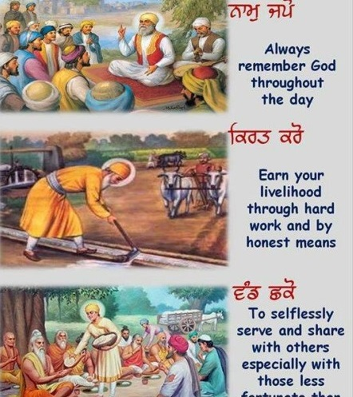

BASIC PRINCIPLES
NAAM JAPO
Naam Japo or Naam Jaap is the practice of remembering God through repetitive recitation and focusing the mind on His various names and attributes. The Rehat Maryada of Guru Gobind Singh Ji requires Sikhs to engage in Naam Simran as a part of their daily routine. This practice is considered essential in Sikhism for conquering negative emotions like ego, greed, attachment, anger, and lust, collectively known as the Five Evils or Five Thieves, and bringing peace and tranquility to one's mind.
Sikhs practice both quiet individual recitation of Naam in their minds, known as Naam Simran, and communal recitation of Naam, called Naam Jaap. Naam Japo also refers to the vocal singing of Shabads or hymns from the Sri Guru Granth Sahib Ji and chanting various names of God, particularly the word Waheguru, meaning Wonderful Lord. Singing hymns with musical accompaniment is known as Kirtan.
This act of meditation, singing, and chanting is one of the three main pillars of Sikhism, and it holds great importance in the daily life of a Sikh. Meditation is considered a critical practice in the Sri Guru Granth Sahib Ji. The other two pillars of Sikhism are Kirat Karni, or honest living, and Wand kay Shako, or sharing one's earnings with others.
KIRAT KARO
Kirat Karni, which means "earning an honest livelihood," is one of the three main pillars of Sikhism, alongside Naam Japo and Wand kay Shako. The concept of Kirat Karni emphasizes the importance of working hard and honestly to earn a living, while living a family-oriented lifestyle and practicing truthfulness and honesty in all dealings. The term encompasses the idea of carrying out good deeds and using one's God-given skills, abilities, talents, and hard work to benefit oneself, one's family, and society as a whole. This involves working with determination and focus, without succumbing to laziness or wasting time, and without making personal gain the primary motivation. Instead, one should dedicate their work to God and make Simran (remembrance of God) the main motivation. In this way, performing Kirat is seen as equivalent to saying a prayer or performing meditation, and is considered just as important as attending a Sunday service at a place of worship.
WAND CHAKO
Wand kay Shako is one of the three primary pillars of Sikhism, established by Guru Nanak Dev Ji, the founder of the faith. The other two pillars are Naam Japo and Kirat Karni. The term "Wand kay Shako'' means to share one's wealth with others in the community, to donate to charity, to provide food in Langar (free Kitchen), and to generally help those in need within the community. A Sikh is expected to give at least 10% of their wealth or income, known as Dasvandh, to those in need or a worthy cause. This concept recognizes that everything one receives is by the Will of God or Hukam, and when one receives more than they need, it should be shared with the community, particularly those who are in need.
An alternative spelling of Wand kay Shako is Vand Ke Chakna, which means to share the fruits of one’s labor with others before considering oneself. Therefore, living as an inspiration and a support to the entire community is essential.
The term 'Sikh' means a student or disciple. Thus, Sikhism can be described as the path of discipleship. The ideal Sikh strives to remain detached from worldly possessions, much like the lotus flower that blossoms above the surface of water. While fulfilling their duties towards their family and community, the primary focus of a Sikh is to lead a pure and moral life, characterized by virtuous deeds and kind words. Fasting, practicing austerities, undertaking pilgrimages, giving alms, and performing penance are not considered to be of great significance in Sikhism.
The term 'Sikh' means a disciple, and therefore, Sikhism is fundamentally a path of discipleship. A true Sikh remains detached from worldly things, like a lotus that keeps its flower above the water's surface. A Sikh must fulfill their duty to their family and community, and the most important thing is to lead a pure and moral life, filled with good deeds and kind words. Fasting, austerities, pilgrimages, alms-giving, and penance are not considered significant by Sikhs.
Regarding Bhakti, those who understand its importance believe that forgetting God is akin to death, and contemplating on His name is life and joy. However, certain conditions must be met before Bhakti can be achieved:
I. Faith in God
II. Following the Truth
III. Detachment and desire lessness
IV. Control over thought, word, and deed
V. Association with holy men (Satsang)
VI. Humanity and submission to Hukam.
SALVATION/MUKTI
The word "Sikh" means a disciple, and thus Sikhism is a path of discipleship. A true Sikh remains detached from worldly things, much like a lotus blossom floating on water. The Sikh's duty is to their family and community, and they strive to lead a pure and moral life, filled with noble deeds and kind words. A Sikh does not view fasting, austerities, pilgrimages, alms-giving, and penance as important.
In Sikhism, the ultimate goal is union with God, and Bhakti, or devotion, is a key part of achieving this. Faith in God, following truth, unattachment, control over thoughts and actions, association with holy people, humanity, and submission to Hukam are essential conditions for Bhakti.
According to the Guru, the man of God rejects salvation and seeks only the love of God. The joys of heaven are nothing compared to merging with the Divine Spirit, which is the ultimate goal of humanity. The Guru emphasizes that true knowledge comes from having truth in one's heart and living a pure and clean life. In Sikhism, a preceptor or Guru is necessary for attaining salvation, and the grace of the Guru is essential. While Sikhism does not recognize chosen prophets or people, it emphasizes the importance of the word as the Guru. The Granth Sahib is the eternal Guru, and the Panth, or community, is the embodiment of the Guru. The Panth represents the progressive and dynamic personality of the Guru in Sikhs, and the word is the embodiment of eternal and unchanging truth. The Guru destroys illusions and attachments to worldly objects.
The Guru Granth Sahib Ji is considered the living embodiment of the Ten Gurus in Sikhism. It is the living flame of the Name that illuminates the path of the disciple. As Gurbani is Guru and Guru is Gurbani, there is no place for a living Guru in Sikhism. The role of the Guru is to guide the disciple through words, and in the same way, Guru Granth Sahib guides the Sikh through its message in the form of songs. When a Sikh is in doubt about any principle of Sikhism, he refers the matter to the Panth for a decision.
READING OF SCRIPTURES
Many sacred books contain good thoughts and noble sayings, but reading them alone cannot be of much help. It is merely the first step. Guru Nanak Sahib Ji states, “If a man reads books throughout his whole life, until his last breath, only the Holy Name is valuable, all else is vanity of the self.” Furthermore, “the scholar is an idiot if he has greed, avarice, and pride.” What is important is the practice of the Name and the cultivation of virtue. An ounce of practice is preferable to a ton of knowledge. Ethics and laws tell us what to believe and what to do; they are like signposts. However, one has to walk the path by oneself. God cannot be reached by reading books or performing rituals. Scriptures are our guides for action, but they cannot fill the disciple with divine love. The knowledge of Vedas does not bring liberation: “God is beyond the Vedas, beyond the holy books.” One can find Him within oneself by introspection.
THE DOCTRINE OF GRACE:
According to Guru Nanak Sahib Ji, God has selected him as a bride out of a vast number of people. This is a result of the qualities possessed by the bride, such as humility, loyalty, and kind words, which have earned her the favor of the Lord. Surrendering oneself to God is the ultimate virtue of freedom. Similarly, just as a devoted wife derives immense pleasure from completely surrendering herself to her virtuous husband, a devotee experiences supreme joy by surrendering himself to God. Surrendering oneself to God implies the absence of worldly desires and cravings.
GRACE AND KARMA:
The concept of modifying Karma through grace is a fundamental principle of Sikhism. According to Guru Nanak Sahib, Karma is the reason for birth in this world, but salvation can only be attained through God's grace. While good deeds may earn the approval of both society and the divine, God does not manipulate human choice, though as the ruler of the universe, he governs the ultimate fate of individuals.
CASTE AND SIKHISM:
Sikhism does not promote belief in caste. No one is born superior or inferior. Guru Amardas Ji stated, “All colors and forms are thine.” Guru Arjan Sahib illustrated this through the metaphor of the potter molding clay into various forms. All humans are vessels of God. Despite following different religions or identifying with different labels, people are essentially one and indivisible. Whoever meditates on God becomes as great as Him. Ravidas the cobbler, Sadhna the butcher, and Saina the barber were all elevated to the pedestal of saintliness and revered by all. God's name has the power to transform anyone, irrespective of their caste or social status, into a Bhagat. The practice of God's name purifies and cleanses, eliminating all impurities. Even if a person belongs to a higher caste, they are worse than a person of the lowest caste if they do not meditate on the Name. Furthermore, caste holds no significance in the afterlife. In God’s Court, individuals will be judged based on their thoughts and deeds, not their family or lineage. The Guru brought together the four castes under one banner. However, he also taught us to be humble and free of egoism(haumai) because without it, we cannot attain spiritual enlightenment.
PLACE OF MIRACLES:
Sages and prophets should not perform miracles to prove their divinity or to make people believe in them. Miracles can actually hinder one's spiritual path. Guru Amardas Ji believed that the desire to perform miracles is a worldly attachment and an obstacle in the way of the divine Name residing in our hearts. Guru Nanak Dev Ji also did not have an interest in performing miracles. In fact, he believed that the greatest miracle was to not perform one, despite his ability to do so. He believed that if he were to exercise supernatural powers and perform miracles, it would only deceive foolish people who do not have God in their hearts.
Sikhism does not encourage the practice of performing miracles to prove one's greatness or the truth of a religion. Guru Nanak Dev Ji refused to show any miracle except the True Name, which he believed was the only miracle. Similarly, Guru Arjan Sahib Ji and Guru Teg Bahadur Ji underwent torture but did not perform any miracles. Men of God do not engage in such tricks. In fact, Guru Hargobind Singh Ji scolded his son Baba Atal for displaying supernatural powers, which ultimately led to his death.
Sikhism does not advocate renunciation of the world or living in solitude. Guru Nanak Sahib criticized Yogis and Sidhs who lived in remote places, as the mind does not find peace in physical isolation. In the Sidh-Gosht, he says that even when one is away from cities, the mind still wanders in sleep. Living in society is preferred, but one should not covet another man's wife. By meditating on His Name, one can gain self-control.
The Sikh Gurus considered married life to be the best way of living. Avoiding the realities of life is not considered saintly in Sikhism. The household is viewed as a school where self-love is transformed into service for others, and where the need to earn an honest living leads to the development of character. Guru Arjan Sahib stated that renunciation of lust, anger, and attachment is praiseworthy. Guru Gobind Singh Sahib Ji described renunciation as considering one's house as a forest and oneself as an ascetic within it. Practicing continence is like having matted hair, and communing with God is like performing ablutions. Instead of growing long nails, pray daily, strive for acquiring divine knowledge, and repeat His Name. Guru Nanak Sahib stated that a true Sanyasi is one who fixates their mind on God's feet, remains desireless amidst desires, and is in love with the True One. Such a person is neither depressed by sorrow and misfortune nor elated by joy. They accept happiness and sorrow with the same spirit.
PILGRIMAGE:
According to Sikhism, going on a pilgrimage does not bring any spiritual benefit. Guru Nanak Dev Ji clearly states that pilgrimage is not even worth a mustard seed. People who go on a pilgrimage bathe in holy rivers or tanks, but external cleaning does not purify the mind. Guru Nanak Dev Ji says:
Why wash the body on the outside?
Cleanse the mind,
Remove the filth of desire,
And follow the path of salvation.
All the Gurus have worked to remove the false belief in the effectiveness of pilgrimage. Guru Nanak Dev Ji says, "I will only go on a pilgrimage if it is pleasing to Him." He also says, "The Word, contemplation, and divine knowledge within me are my places of pilgrimage."
FASTING:
In Sikhism, the act of tasting food is not considered a religious merit. While fasting for the purpose of overcoming disease or abnormality is acceptable, fasting for the sake of austerity or ritual is detestable. Guru Nanak Sahib has stated that truth is superior to penance, fasting, austerity, and alms-giving. It is ridiculous to suggest that one's spirituality depends on the quality or quantity of food they consume. It is important to eat normal food, and if a person is unable to do so, it may indicate an underlying issue. However, fasting for the sake of fasting is pointless.
MAYA:
Maya has been defined in various ways. Some believe that this world is Maya, an illusion. However, according to Sikhism, the universe, being the creation of the Supreme Being, is the temple of Divinity and an embodiment of His Eternal Truth. The world is subject to the Divine Will and has no independent existence of its own. In that sense, it is unreal or illusory and subject to decay. As compared to the Creator, the Eternal Truth, the universe is described as insubstantial as a shadow, fleeting like a dream, and short-lived as a bubble. The Guru explains this concept through a metaphor of a thousand waterpots reflecting one sky, and when the water-pots burst, the sky remains unchanged.
However, human beings are often infatuated with desires and become lured by the worldliness of material possessions, which can lead them astray from their spiritual path.
MAYA:
Maya has been defined in various ways. Some believe that this world is Maya, an illusion. However, according to Sikhism, the universe, being the creation of the Supreme Being, is the temple of Divinity and an embodiment of His Eternal Truth. The world is subject to the Divine Will and has no independent existence of its own. In that sense, it is unreal or illusory and subject to decay. As compared to the Creator, the Eternal Truth, the universe is described as insubstantial as a shadow, fleeting like a dream, and short-lived as a bubble. The Guru explains this concept through a metaphor of a thousand waterpots reflecting one sky, and when the water-pots burst, the sky remains unchanged.
However, human beings are often infatuated with desires and become lured by the worldliness of material possessions, which can lead them astray from their spiritual path.
THE CONCEPT OF EDUCATION IN SIKHISM:
Sikhism has a comprehensive system of self-education that aims to prepare individuals for self-growth by creating an aesthetic and emotional background. Dharma must inspire all educational instruction and atmosphere in educational institutions. Education is divided into three types of knowledge: knowledge of the Hand, knowledge of the Head, and knowledge of the Heart. The education of the Hand refers to the dignity of manual labor and the readiness to earn a living through physical work. It also includes serving humanity with one's hands. Guru Nanak Sahib emphasizes this point by stating that those who earn their living through hard work and give to those in need are the ones who understand the path of Truth and Virtue. Education should not be used to exploit or rule over others. Instead, one should value knowledge, truth, and virtues and not worry about the future, as reaching the land of love will bring endless joy.
Guru Nanak Dev Ji demonstrated his system of education practically by training his successor Sri Guru Angad Dev Ji through discipline. The aim of this education is to merge the individual with the higher self, with Beauty, Truth, and Goodness. This makes education both purposeful and creative. The feeling of unity of the individual with the Universal on the psychic plane is called "liv," which is union with God. A man of God does not renounce the world, but instead lives in it and performs his duties as a householder without attachment to worldly desires. The mind remains in constant communion with Divinity, and such a person meditates or does good naturally and automatically. In tune with the infinite, the individual soul feels no pain or sorrow.
UNION OF SOUL WITH GOD:
Guru Arjan Dev Ji has outlined five aspects of the actual experience of the union of the individual soul with the Universal Soul. Firstly, the darkness of ignorance disappears, and the individual realizes the wonder of God's universe. Secondly, there is an inner illumination, a kind of revelation and enlightenment, not of the intellect but of mystic exaltation. Thirdly, the individual gains equipoise, a state of indefinable peace and confidence that comes from the loss of the ego. This sense of tranquility is due to the identification of the self with Divinity. Fourthly, the individual begins to love the entire humanity and is filled with a great longing for the service of his fellowmen. Fifthly, the individual realizes everything as emanating from God. His soul, which had emanated from God, is united with the Ultimate Source.
A true yogi is not one who leaves his family and home and wanders all over the country. Instead, a true yogi finds renunciation in the house itself. He does not regard the house as his own, but of the Lord. He renounces egoism. The true yogi is a friend of all, a servant of servants. He fixes his mind on God and remains desireless in the world. He remains indifferent to sorrow and happiness and is free from cares because he loves the only one God.
Guru Nanak Sahib Ji rebuked the yogis for going to the houses of the laity for begging. He denounced parasitism and recommended renunciation of desire and attachment in the midst of temporal life through the discipline of the Name.
THE CONCEPT OF WOMAN:
The Gurus of Sikhism held women in high regard and with the advent of Sikhism, women gained increased respect and social status. In some ancient texts, women were deemed unworthy of education or religious practices and were considered impure and evil. Guru Nanak Sahib Ji challenged this view and questioned why women should be subjected to contempt and cruelty simply based on their gender. The Sikh holy book, Guru Granth Sahib Ji, states that women are the source of life, from conception and birth to marriage and companionship, and are integral to the continuation of the human race. Women were granted equal participation in religious gatherings and Kirtan, and could partake in temporal and secular observances. Sikh theologian Bhai Gurdas ji asserted that women were the other half of men and played a role in helping them attain salvation, while Guru Har Gobind Sahib Ji referred to women as the conscience of men. Both men and women are required to undergo the initiation ceremony of Khande di Pahul(Amrit), and the rules of conduct and religious duties are the same for both sexes. In religious meetings, men and women lecture and sing as equals. Guru Amardas Ji condemned the practice of Sati or widow-burning, and stated that those who die of the shock of separation from their husbands are the true Satis, rather than those who burn themselves with the dead bodies of their husbands. Thus, Sikhism emphasizes the equality of both sexes.